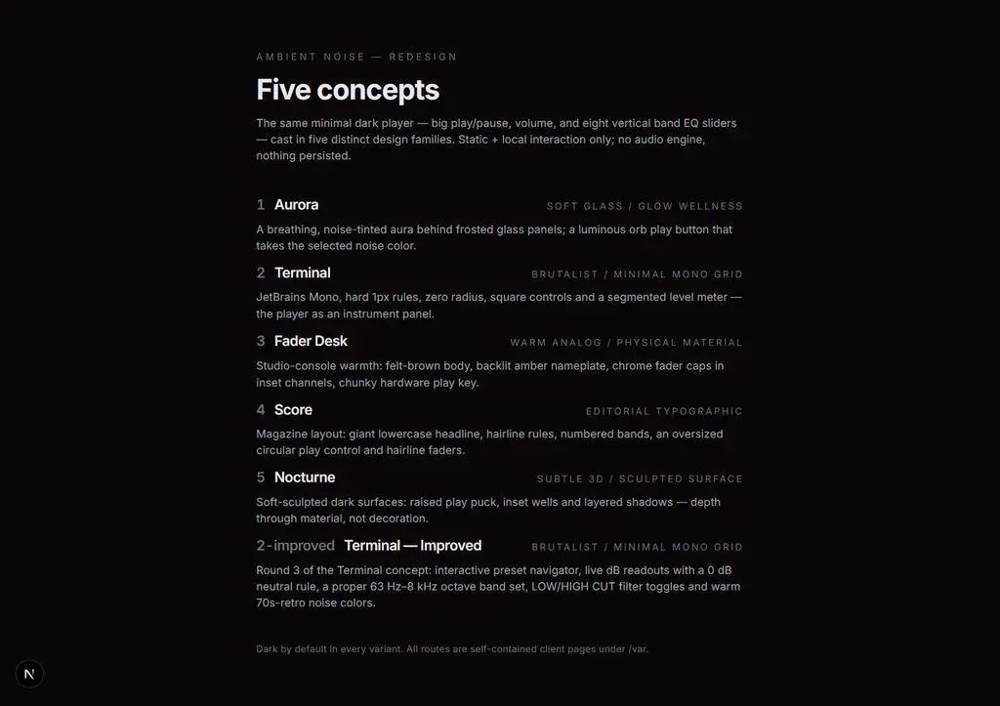

Bottom line60-second brief
The scenewhat shipped before
A real audio engine, wearing a wandering face.
ambient-noise began in Feb 2026 as a PM-doc-first project (requirements and docs, product mgtm docs completed enough for mvp, phase 0 + 1 generated). It grew a genuine Web Audio engine — white/pink/brown noise, an 8-band EQ, cut filters — first toward a mobile (Expo/React Native) app, then toward the web. The engine was real; the interface was a moving target.
Look at the commit subjects between the first player and the redesign and the pattern is unmistakable — a tape deck whose look was nudged, not decided:
2026-02-21 ui bumps2026-02-22 uiux bump2026-02-23 ui bump2026-02-24 ui bump2026-02-24 bug fix·2026-02-26 fix: stub audio engine to unblock dev client build
Five months of shipping a thing that works, wrapped in a surface that keeps changing by small degrees and never lands. There is no coherent “why this looks like this.”
The deeper point: the constraint was never engineering. The audio graph, EQ math, autoplay handling — all there and working. The gap was taste: a defensible visual direction, chosen from real alternatives, executed with consistency. That is exactly the problem a design/UI-UX agent is built to take off a human’s plate.
The five caststhe redesign day
One player, five design families — so the choice is real, not a vibe.
The agent did not pick a theme and build it. It cast alternatives: take the same controls — big play/pause, volume, eight vertical band sliders — and render them in five genuinely distinct design languages. The comparison index (/var) frames it plainly:
“The same minimal dark player … cast in five distinct design families. Static + local interaction only; no audio engine, nothing persisted.”— /var comparison index, verbatim

| # | Concept | Design family | Signature (verified live) | Verdict |
|---|---|---|---|---|
| 1 | Aurora | soft glass / glow wellness | Inter, fully rounded pill controls, 48 px title, breathing aura — wellness-app idiom. | Cast · not picked |
| 2 | Terminal | brutalist / minimal mono grid | JetBrains Mono, zero radius, square controls, hard rules, segmented meter — the player as an instrument panel. | Pick → refined |
| 3 | Fader Desk | warm analog / physical material | Space Mono, rounded-4px, amber backlit nameplate, chunky hardware — studio-console warmth. | Cast · not picked |
| 4 | Score | editorial typographic | Inter, 72 px lowercase giant headline, hairline rules — magazine layout. | Cast · not picked |
| 5 | Nocturne | subtle 3D / sculpted surface | Inter, rounded pills, near-black sculpted fills, raised play puck — depth via material. | Cast · not picked |
The whole point of a cast rather than a single guess: it makes the design decision explicit and reviewable. A human (or the taste stage) looks at five honest, distinct directions and picks — instead of rubber-stamping whichever theme an agent happened to generate. Four are rejected loudly; one is chosen deliberately.
The winnerTerminal → UNIT-02
The Terminal concept won — and then had to earn the win across three rounds of refinement.
The Terminal identity — brutalist / minimal mono grid: hard 1px rules, zero radius, square controls, the player as an instrument panel — is a coherent, defensible direction with a strong point of view. But picking it was only the start. The commit trail shows the refinement loop that took a concept to a finished instrument:
0c2ac23 add 5 minimal dark player UI redesign variants
The five casts land at /var/1…5.
a68fd6d refit UI variants to 8-band vertical EQ, viewport-fit
Harmonise the winner around the real control surface — a proper 8-band vertical EQ that fits the viewport.
bfb050b add improved var2 player with preset nav, dB EQ, cut filters
The interactive round: preset navigation, live dB readouts, low/high-cut filters.
4da94c4…d4ddb88 var2-improved: black faders, fixed chevrons, EQ collapse, noise fills, AA fixes, wired to engine
Six polish commits tightening alignment, spacing, contrast and finally wiring the whole surface to the real AudioEngine.
“Variant 2-improved — ‘Terminal / UNIT 02’ evolved. Preserves the instrument-panel identity: hard 1px rules, square controls, zero radius, uppercase JetBrains Mono, STANDBY/RUNNING lamp, segmented meter, h-dvh viewport fit, eight vertical faders.”
Notice what the refinement adds: state and meaning, not decoration. A STANDBY/RUNNING lamp. Live dB with a 0 dB neutral rule. A proper 63 Hz–8 kHz octave band set (the earlier variants still used the legacy 31 Hz–16 kHz labels). 70s-retro noise fills (cream/salmon/burnt-orange) for the three colors. This is where a design agent earns its keep — the pick was taste, but the shipping was craft: every element justified, nothing decorative left floating.
Ship as v2web-only, flat, installable
From a winning page inside a monorepo to a clean, web-only product in one move.
The v1 repo was a pnpm monorepo (Expo mobile + web + shared/UI packages) whose git root sat at the parent directory. The win was a single page buried in it. The spin-out took exactly that surface — check what a surface actually imports, not what the package exports — and vendored only what UNIT-02 really used: ~6 type definitions plus an EQ constant. No monorepo, no workspace packages.


And v2 did not stop at the static win — it kept receiving genuine feature polish, now on a clean base:
| Commit | What landed |
|---|---|
400275d (v2 init) | flat web-only UNIT-02 noise instrument (PWA) |
92b000b | independent L/R stereo noise with a MONO/STEREO toggle |
9f81388 (PR #1) | stereo mode, marquee preset names, styled toggle — the first PR |
e84dfd8…10c34f7 | marquee preset names + reduced-motion interplay across engines |
f271489 | versioned service worker for reliable PWA updates |
1c6199d | per-platform “add to home screen” install guide |
The v2 README states the identity plainly and correctly: “a single screen in the UNIT-02 aesthetic: a brutalist mono instrument panel with hard 1px rules, square controls, JetBrains Mono, and a STANDBY/RUNNING lamp.” A design language you can state in one sentence is a design language that survived contact with an implementer, three rounds of refinement, a repo spin-out, and a PWA deploy.
Under the hoodthe agent that did it
The makeover is the proof; this is the pipeline that produced the agent.
The redesign of 2026-09-05 is not an isolated feat — it is the visible output of a deliberately-built design-agent stack, and that stack itself was derived from months of earlier work scraping and analysing Instagram design content. The lineage runs in two parallel threads that finally met.
Thread one — the taste corpus (what makes the agent opinionated)
Before there was a design agent, there was a pipeline for collecting real design inspiration. A chain of repos hardened an Instagram-scraping ingest path: apify-cc-plugin → cc-apify-plugin-v2 → cc-apify-plugin-v3 (a four-gate, DuckDB-backed ingestion plugin that keeps data out of the LLM context), plus scrape-ig-saved-list (HAR-capture parsing of a saved-list export, Gemini extraction into a knowledgebase) and its medallion successor in datalake. Strategy repos — social-media-strategy, social-media-content-strategy-research — framed what was worth collecting.
That corpus is why ambient-noise’s ux-design/ folder holds ~90 reference images — tape-reel UI mockups, VFD displays, Technics hardware, retro-vintage aesthetics. The design families the agent casts are not invented in a vacuum; they are assembled from a collected, curated visual vocabulary.
Thread two — the agent stack (what executes the taste)
Formalised on the same day as the redesign (2026-09-05): the frontend-craft implementer + the ux-worker orchestrator that briefs it. frontend-craft is a frontend implementer specialised for craft-and-anti-slop quality — it auto-loads the impeccable audit engine, web-design-guidelines, vercel-react-best-practices, and a taste-skill (design-taste-frontend), and routes heavier engines (ui-ux-pro-max, interface-design, hue, scroll-craft) on demand by concern.
The ux-worker/CAPABILITIES.md registry encodes the whole doctrine as a concern taxonomy — craft floor, taste direction, design intelligence, product-UI continuity, brand→tokens, motion, mobile-first. Crucially it also records a classified-and-rejected list: skills that were researched and deliberately not installed (phantom repos, stale derivative aggregates, license-gated ones). Building the stack was curation, not accumulation.
The redesign loop was the real-world rehearsal of the process the agents were built for: cast ≥5 aesthetic variants from ≥3 design families, pick one against a declared spec, implement with a craft-skilled agent, audit it, ship.— ux-worker / frontend-craft operating doctrine
So the honest framing of the makeover is not “an agent drew a pretty UI.” It is: a pipeline scraped the web for taste, that taste was curated into a vocabulary and then into skills, and those skills let a small specialised agent do — in one day, with visible alternatives and a reviewable pick — what five months of “ui bumps” could not.
Before / afterwhat actually changed
Not prettier — decided, and shippable.
Before
the drifting tape deck- Working audio, wandering surface: “ui bump,” “uiux bump,” “needs more ui updates.”
- No defensible direction — a look that changed by small degrees without ever landing.
- Legacy 31 Hz–16 kHz EQ labels that didn’t match the UI’s own band names.
- No stated identity you could hold an implementer to.
After
UNIT-02, shipped as v2- One explicit identity: brutalist mono instrument panel, hard rules, square controls, JetBrains Mono, STANDBY/RUNNING lamp.
- Five real alternatives existed, so the pick is reviewable — not a vibe.
- Correct 63 Hz–8 kHz octave bands, live dB with a neutral rule.
- Shipped clean as a flat, web-only, installable PWA — and kept receiving real polish.
Takeawaysthe reusable lesson
Grounding & methodhow this postmortem was built
Every claim here traces to a file, a commit, or a live capture — no screenshots were imagined.
The screenshots in this report are live captures, not mockups: the five /var concepts and the winner were rendered by the actual v1 dev server and screen-captured at a 1280×900 viewport; the v2 shots were captured from the v2 dev server at desktop and mobile (390×844) sizes. Variant identities (fonts, radii, fills) were verified against the running page, not assumed from filenames.
The narrative arc — PM-doc-first birth → mobile+web monorepo → UI drift → five-cast redesign → UNIT-02 winner → v2 spin-out → continued polish — is grounded in the v1 git history (1af4d93 → d4ddb88) and the v2 commit log. The agent-lineage claims are grounded in the agent definitions themselves (frontend-craft.md, ux-worker/CAPABILITIES.md) and the parallel scraping-lineage repos.